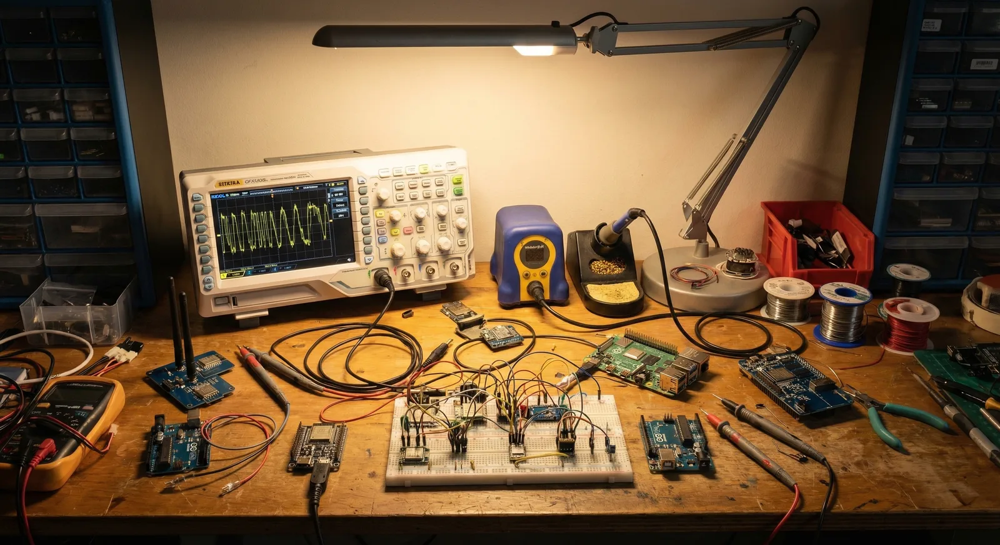
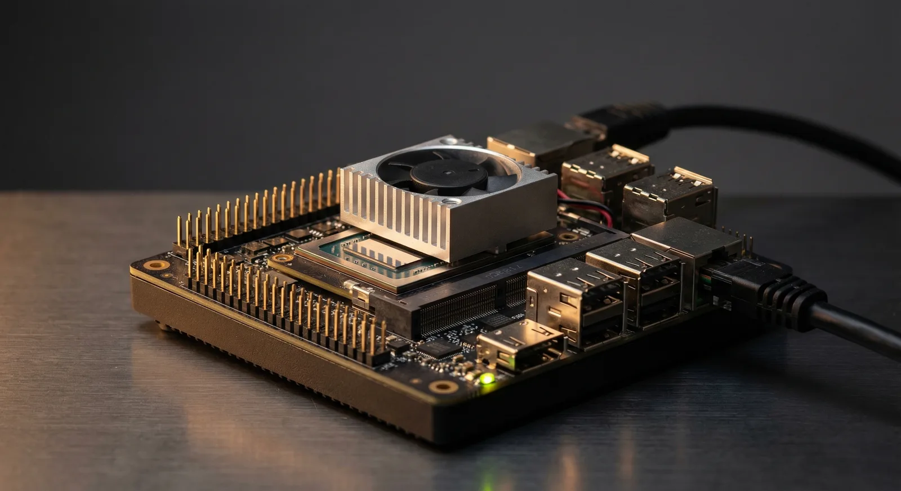

Technology · Engineering approach
The intelligence is software. The hardware is whatever you already carry.
Every Ceradon product applies the same thesis: put the capability in software, run it at the edge, and make it work on commodity hardware the operator already owns. No proprietary payloads, no cloud dependency, no procurement cycle standing between a unit and a capability.
Four design rules, checked against shipped products
An approach page is easy to write and hard to prove. So each rule below is cross-referenced to the fielded product that demonstrates it — the same way a requirement traces to a verification event. If a rule has no evidence, it does not appear here.
Process at the edge, not in the cloud
Data is computed where it is collected — a laptop on the tactical network, embedded compute on the platform. Nothing depends on connectivity, nothing transits infrastructure the operator does not control, and nothing is exposed to exfiltration in the first place.
Commodity hardware, software intelligence
The capability lives in the software, so the hardware can be cheap, replaceable, and already in inventory. A sensor that is a payload must be bought, integrated, powered, and carried. A sensor that is software ships as an update.
Sense passively where physics allows
Emitting reveals position. Where the physics supports it, our sensing reads signals already present in the environment rather than transmitting new ones — awareness without adding to the unit’s signature.
Operator-in-the-loop, not operator-replaced
Autonomy handles volume; the human holds judgment. Our systems surface, rank, and recommend — and a person validates before anything consequential happens. That is a safety mechanism, and it is also how systems earn trust in the field.
Where the research is going
The product pages show what ships today. These are the threads we are investing in next, labelled by maturity — because an evaluator deserves to know the difference between a prototype and an idea.
Operator-directed edge retraining
On-device model adaptation in minutes, directed by the operator who knows the environment — no reach-back to CONUS, no contractor, no weeks-long retraining pipeline. Detailed below.
Passive detection expansion
Extending Wi-Fi CSI anomaly detection toward zero-emission awareness of Group 1–3 threats, building on the passive RF work fielded in VANTAGE.
Collaborative autonomy
Software-defined orchestration for decentralized drone behaviors and wolfpack-style missions — coordination logic that survives losing any single node.
Localized production logic
Orchestration for field-based assembly, repair, and sustainment of robotic assets — treating the supply chain as something a small team can carry with it.
Edge retraining: closing the last mile
Every defense AI program hits the same wall: models trained in controlled environments degrade in the field. Different terrain, lighting, concealment methods, and threat profiles mean laboratory accuracy rarely survives first contact with reality.
The prevailing answer — ship data back to CONUS, retrain in a SCIF, push updates weeks later — does not work for small teams in denied or disconnected environments. We are building the alternative: retraining on-device, in minutes, directed by the operator who knows the environment best.

Why it matters
- ▹ SOF teams need systems that adapt to the environment they are in right now — no reach-back to data centers.
- ▹ Border and perimeter security faces threat profiles that change faster than any centralized retraining cycle.
- ▹ Partner forces can train on their environment with their data — no classified training sets required. A significant FMS enabler.
- ▹ Persistent surveillance at FOBs and COPs where the threat signature changes weekly.
How we are building it
- ▹ Operator-in-the-loop: human oversight is the safety mechanism — operators validate retraining results before deployment.
- ▹ Incremental learning: adapt models with small, field-collected datasets without catastrophic forgetting of base capabilities.
- ▹ Edge-native compute: the full retraining pipeline runs on embedded hardware — no cloud dependency, no exfiltration risk.
- ▹ Closed-loop integration: retrained models feed directly into autonomous response and C2 systems.
Research partnerships
We collaborate with academic labs and government research programs to advance passive RF sensing, autonomous systems integration, and field-deployable manufacturing.
- ▹ SBIR/STTR-eligible across multiple DoD topics.
- ▹ Open to joint research with universities and FFRDCs.
- ▹ Active engagement with SOF innovation channels.
Contracting snapshot
The identifiers a program office needs, in one place.
- CAGE
- 179U9
- UEI
- UZA9PFJ9RDL6
- Socio-economic status
- SDVOSB · VOSB
- NAICS
- 541715 · 541330
- PSC
- K058 · AJ11
- SAM.gov
- Active through Dec 5, 2026
Evaluating a sensing or autonomy problem?
Whether you are a research lab, a defense prime, or a program office exploring new modalities — bring the problem and we will tell you plainly whether our approach fits it.
Contact Ceradon SystemsSDVOSB · CAGE 179U9 · UEI UZA9PFJ9RDL6